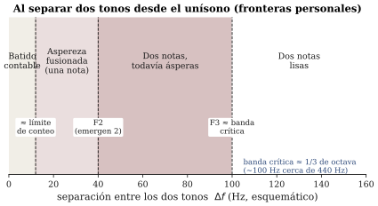
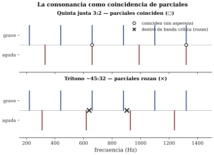

Banda crítica y consonancia
Sesión 08 · Curso Acústica Musical UC Objetivos que cubre: OA2.2 (batidos, banda crítica y tonos de combinación, demostrados y medidos en persona), OA2.3 (fundamento perceptual de la consonancia), OA5.2 (primera radiografía espectral del objeto del proyecto).
¿Dónde termina el batido?
La sesión 07 dejó una regla limpia — dos tonos casi iguales producen una sola nota que ondula f_b = |f_2 - f_1| veces por segundo — y una pregunta abierta: ¿qué pasa cuando la diferencia crece? En la escucha del día usted lo diagnosticó con sus propios términos, y en el taller le puso números. El recorrido completo, partiendo del unísono y separando los tonos lentamente, tiene cuatro estaciones:
- Batido contable: una sola nota cuya sonoridad ondula; se pueden contar las ondulaciones (hasta alrededor de una decena por segundo).
- Aspereza fusionada: sigue oyéndose una nota, pero la ondulación se vuelve demasiado rápida para contarla y se convierte en una vibración áspera, granulada.
- Dos notas, todavía ásperas: en algún punto — su frontera F2 — el sonido se parte: ahora hay dos alturas distinguibles, pero el conjunto sigue rozando.
- Dos notas lisas: pasada la última frontera — su F3 —, la aspereza desaparece y quedan dos tonos limpios y separados.

Lo notable del taller no es el orden de las estaciones (es el mismo para todos) sino dónde caen las fronteras: son personales, varían algo entre oídos y según la atención, y sin embargo se agrupan. Las F3 del curso, puestas en la recta del pizarrón, se apiñaron en torno a unos pocos semitonos. Ese ancho tiene nombre, y es de los números más importantes de la psicoacústica.
¿Por qué el oído fusiona lo que el aire mantiene separado?
Primero, un dato que descoloca: mientras usted oía “una nota áspera”, el micrófono veía dos líneas espectrales limpias. En el aire no hay ninguna aspereza; hay dos ondas superpuestas que un análisis suficiente separa sin drama. La rugosidad no es una propiedad del sonido: es una propiedad del encuentro entre ese sonido y su oído.
La explicación usa la pieza que la sesión 05 dejó instalada: la membrana basilar, esa cinta dentro de la cóclea donde cada frecuencia hace vibrar con máxima amplitud una zona distinta — el “teclado” mecánico del oído. Un tono puro excita una zona; dos tonos puros excitan dos zonas. Si las frecuencias están muy cerca, las dos zonas se superponen: una misma población de células sensoriales recibe ambas ondas a la vez, y lo que recibe es la suma — con sus refuerzos y cancelaciones. Por eso oímos una nota que ondula (batido) o que vibra áspera (rugosidad). A medida que las frecuencias se separan, las dos zonas de excitación se van despegando: cuando la separación alcanza para que emerjan dos máximos distinguibles, oímos dos alturas (F2); cuando las zonas ya casi no se pisan, la interferencia muere y el par queda liso (F3).
El ancho de separación a partir del cual dos tonos dejan de interferirse en la membrana se llama banda crítica. En el rango medio del registro musical su orden de magnitud es un tercio de octava — aproximadamente una tercera menor; alrededor de 440 Hz, del orden de 100 Hz (Roederer 1997, sec. 2.4). El curso no necesita tablas finas: necesita la idea (el oído analiza en franjas de ancho limitado) y el orden de magnitud, que usted además midió en persona.
Recuadro opcional (para quienes vienen de ingeniería). La banda crítica funciona como el ancho de banda del “filtro” coclear centrado en cada frecuencia: dos componentes dentro del mismo filtro interactúan (batido, rugosidad, enmascaramiento); en filtros distintos, se procesan por separado. El ancho no es constante en Hz: crece con la frecuencia central, de modo que medido en intervalo musical es más parejo en el rango medio-agudo y se vuelve proporcionalmente enorme en el registro grave. Guarde esa asimetría: reaparece dos párrafos más abajo con consecuencias musicales.
¿Qué tiene que ver esto con que la quinta “suene bien”?
Todo lo anterior fue con tonos puros, que en música casi no existen. Las notas reales — la de su objeto incluida — son tonos complejos: una fundamental y su cortejo de parciales. Y aquí la banda crítica se vuelve teoría musical.
Cuando suenan juntas dos notas complejas, lo que llega al oído es el choque de dos familias completas de parciales. Cada par de parciales vecinos es un pequeño experimento de la sesión: si dos parciales caen dentro de una misma banda crítica, rozan; si coinciden exactamente o quedan bien separados, no aportan aspereza. La lisura de un intervalo es la suma de esos micro-choques.
Tome la octava (razón 2:1): cada parcial de la nota aguda cae exacto sobre un parcial par de la grave. No hay pares que rocen: el intervalo es transparente, casi una sola nota más rica. Tome la quinta justa (razón 3:2), por ejemplo 220 y 330 Hz: los parciales coinciden cada tres de la grave y dos de la aguda (660, 1320…), y los demás quedan razonablemente esquivados. Tome en cambio el tritono: casi ninguna coincidencia, y varios pares de parciales caen dentro de una banda crítica — el conjunto roza. Esta es, en esencia, la explicación de Helmholtz afinada por la psicoacústica del siglo XX (Plomp): la consonancia sensorial de un intervalo entre tonos complejos armónicos es la ausencia de rugosidad entre sus parciales, y por eso las razones simples (2:1, 3:2, 4:3) producen los intervalos más lisos (ROE 5.2; C&G cap. 4) (figura 2).

La demostración más elegante de la sesión fue el contraejemplo: el mismo tritono, tocado con tonos puros, casi no roza. Si la disonancia fuera del intervalo “en sí”, debería rozar igual. No lo hace, porque sin parciales no hay pares que choquen: la aspereza del tritono vive en los armónicos.
Y una consecuencia que los orquestadores conocen desde siempre, ahora con mecanismo: la votación de la clase sobre “la misma quinta, una octava más grave”. Al bajar el registro, las distancias en Hz entre parciales vecinos se achican, pero las bandas críticas de esa zona son proporcionalmente más anchas: más pares caen dentro, y el mismo intervalo suena más turbio. Por eso los acordes cerrados en el registro grave se evitan — no por regla escolar, sino por cóclea.
¿Y los tonos que no están?
La sesión dejó, como curiosidad audible, los tonos de combinación: con dos tonos puros suficientemente fuertes se oye un tercer tono grave — cerca de la diferencia f_2 - f_1 — que no está en el aire: el micrófono no lo ve. Lo fabrica la mecánica no lineal del propio oído (Benade 1990, sec. 14.1, los llama componentes heterodinos). No le pedimos teoría: solo que lo haya oído y que registre el patrón que se repite en toda la sesión — no todo lo que se oye está en la señal. Volverá a encontrarlo si en su proyecto un espectro “no explica” algo que claramente se escucha.
¿La consonancia es física, entonces?
Cuidado con la conclusión rápida. Lo que la banda crítica explica es la consonancia sensorial: cuánto roza un par de notas sostenidas, aisladas de todo contexto. La consonancia musical — qué intervalos una práctica trata como estables, cuáles exigen resolución, qué acordes “piden” moverse — es otra capa: depende del contexto, del estilo, de la época y del entrenamiento (la 4ª justa es físicamente lisa y sin embargo el contrapunto la trata como disonancia en ciertos contextos; Roederer 1997, sec. 5.2, separa las dos capas con claridad). La física pone el piso — hay razones cocleares para que 2:1 y 3:2 sean especiales en casi todas las culturas — pero no dicta la gramática. Este curso le pide sostener ambas cosas a la vez, sin reducir una a la otra.
La primera radiografía del objeto
El segundo módulo abrió la serie de mediciones s08–s12 sobre el objeto de su proyecto: espectro y espectrograma del objeto sonando en su gesto típico, 4–6 parciales tabulados en Hz, razones f_n/f_1 y un veredicto argumentado: ¿armónico, casi armónico, inarmónico? Ese retrato — con sus condiciones anotadas: app, celular, distancia, gesto — es la línea base del hito 2: en s10 usted va a comparar contra esta tabla para mostrar qué cambió y por qué. Y conecta con la mañana: un espectro inarmónico no tiene quintas lisas que ofrecer — la consonancia por coincidencia de parciales es un privilegio de los espectros armónicos (Benade 1990, sec. 14.3). Si su objeto resultó inarmónico, no es una mala noticia: es una decisión de diseño con consecuencias perceptuales que su informe final puede explicar mejor que nadie.
Síntesis
- Al crecer \Delta f: batido contable → aspereza fusionada → dos notas ásperas → dos notas lisas. Las fronteras son personales; el orden, universal.
- La rugosidad no está en el aire: nace cuando dos componentes excitan zonas superpuestas de la membrana basilar. El ancho que deben separarse para dejar de interferir es la banda crítica: ~1/3 de octava en el rango medio.
- Con tonos complejos, un intervalo es liso si sus parciales coinciden o se esquivan (razones simples: 2:1, 3:2) y áspero si varios pares caen dentro de una banda crítica. El mismo intervalo es más turbio en el registro grave.
- La banda crítica explica la consonancia sensorial; la consonancia musical agrega contexto, estilo y cultura. No son lo mismo.
- Su objeto ya tiene radiografía espectral con condiciones anotadas: es la línea base medible del hito 2.
Hacia la sesión 09
Su ticket de salida quedó apuntando al corazón del problema: si la quinta perfectamente lisa es la razón 3:2 exacta, ¿puede un piano tener todas sus quintas lisas — y todas sus octavas 2:1 — al mismo tiempo? La aritmética va a decir que no, y la historia de la música occidental es el catálogo de las soluciones a ese “no”. En s09 vamos a afinar de oído usando los batidos como instrumento de medición (el juego de s07, ahora en serio) y a escuchar qué sacrifica cada temperamento. Traiga audífonos otra vez.
Referencias y lectura complementaria
- Roederer, J. G. (1997). Acústica y Psicoacústica de la Música. Ricordi — cap. 2, sec. 2.4 (batidos de primer orden y banda crítica, dentro de pp. 24–78); cap. 5, secs. 5.1–5.2 (superposición de tonos complejos y consonancia, dentro de pp. 180–211). Fuente principal de esta sesión, en español.
- Benade, A. H. (1990). Fundamentals of Musical Acoustics, 2.ª ed. Dover — cap. 14, sec. 14.1 (componentes heterodinos / tonos de combinación) y sec. 14.3 (por qué los sonidos armónicos son especiales).
- Campbell, M. & Greated, C. (1987). The Musician’s Guide to Acoustics. Oxford UP — cap. 4, pp. 165–182 (consonancia y disonancia, origen de las escalas: anticipa s09).
- Rossing, T. D., Moore, F. R. & Wheeler, P. A. (2002). The Science of Sound, 3.ª ed. — cap. 8, secs. 8.5–8.15 (tonos de combinación, consonancia; ejercicios para práctica adicional, no obligatorios).